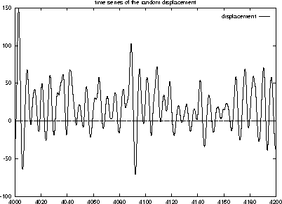

The universe is written in the language of mathematics (Galileo)
|
|
My favorite
equation The universe is written in the language of mathematics (Galileo) |

|
| Class schedule by chapters/sections (tentative) | |||
|---|---|---|---|
| ODEs (Chapters 1-2, *3-6) | |
||
| (*Linear algebra, *Vector calculus) (Chapters 7-10) | |
||
| Exam 1 | |||
| Fourier analysis. *PDEs (Chapters 11-12) | |||
| *Complex analysis (Chapters 13-18) | |||
| *Numerical analysis (Chapters 19-21) | |||
| *Optimization. *Graphs (Chapters 22-23) | |
||
| Exam 2 | |||
| *Probability. *Statistics (Chapters 24-25) | |||
| Final Exam | |||
| Review | Exam | Date |
|---|---|---|
| Review Exam I | Exam I | |
| Review Exam II | Exam II | |
| Review Exam III | Exam III | |
| Review Final | Final Exam |